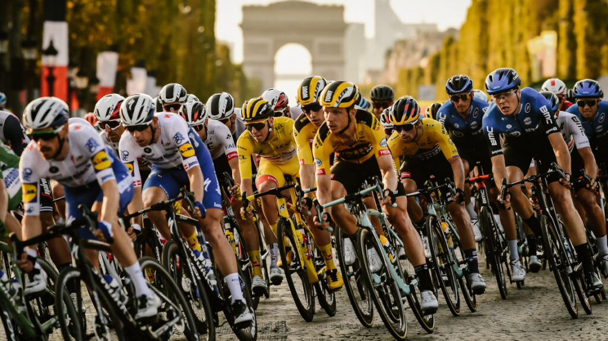
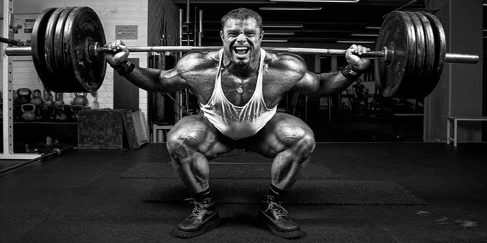

"me gusta el futbol por que es puedo para aumentar nuestra capacidad general.".
- fotbol

"el cyclismo no es el mismo desgasto que el futbol pero es igual de bueno para agrandar las piernas ."
"muy buena forma de perder grasa en general y una muy buena forma de aumentar fuerza hacer crecer el musculo.""
es bueno para relajarse en general hace muy bien para el cuerpo